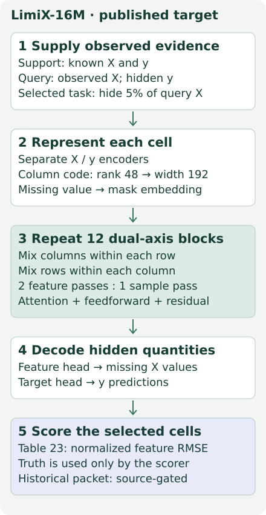
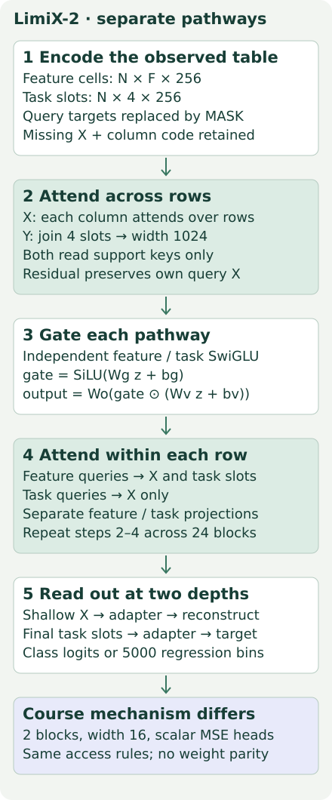
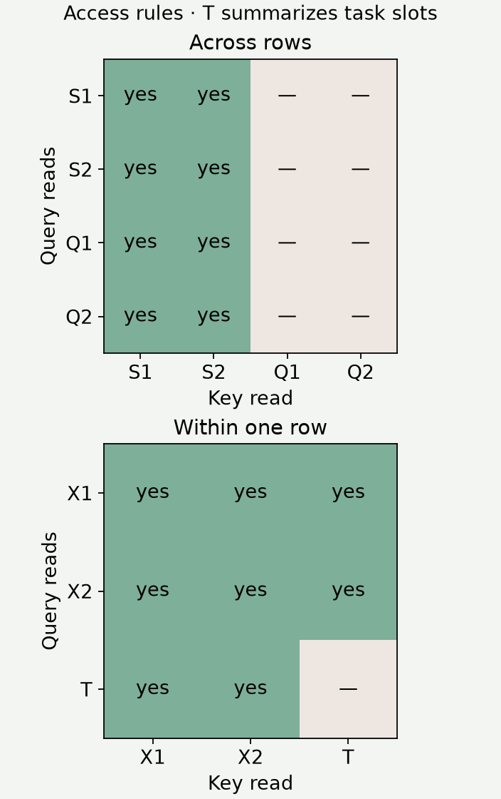
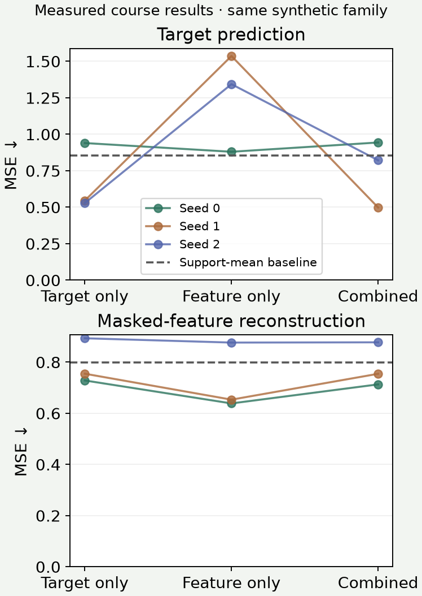
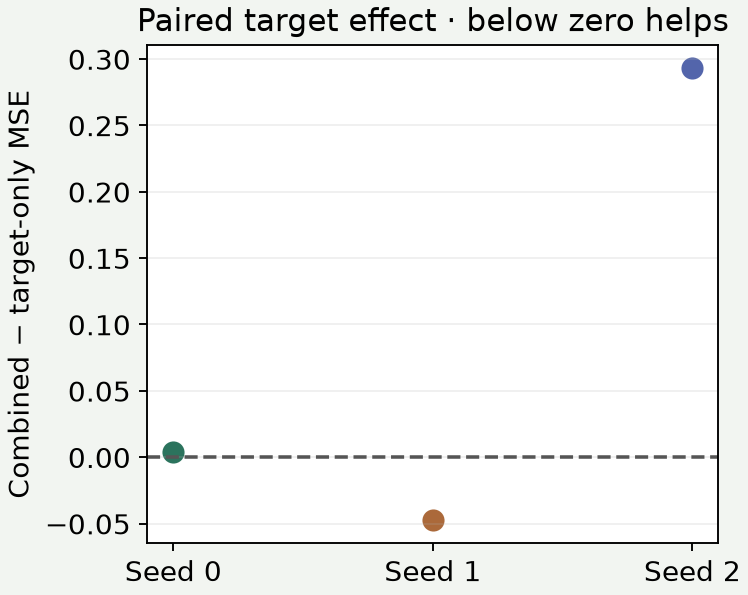

B08 · What should a structured-data model learn to predict?¶
Research bridge · LimiX · one skill: trace the evidence available to a hidden cell, then isolate what a reconstruction objective changes.
B07a: hypernetworks · B06: prior mixtures · Student lab · Executed solution · Field guide
See the idea · then trace the details
LimiX: make the hidden cells explicit
An objective is defined by what is observed, what is hidden and what is scored.
1Choose observed cells
One table, a declared visibility mask
The mask specifies which cells are input evidence and which are prediction targets.
2Process available context
Table-aware computation over visible evidence
Representations combine allowed information across the table. Hidden targets must not re-enter through another feature or preprocessing fit.
3Score the hidden targets
Prediction heads → configured reconstruction losses
The training objective can reward more than one target pattern. The lesson’s ablation isolates what objective changes, holding other choices fixed.
Pause and predict: If you change both visibility and the network, can an observed gain identify the objective’s effect?
No. The comparison confounds the information supplied, the computation and the learning objective.
Answer: No. The comparison confounds the information supplied, the computation and the learning objective.
Begin with the gap¶
B07 asked what information enters the model. B07a asked how a table becomes a predictor. Both leave another design choice open: which unknown quantities should training reward the model for predicting?
Imagine a customer table with income, spending, and a future outcome. Predicting the outcome teaches one direction of dependence. Hiding income and asking the model to recover it creates a different question about the same table. Learning that second question may help the first, or compete with it for capacity.
In plain terms. More prediction tasks provide more supervision. Whether that supervision helps your target is an experiment, not a guarantee.
The conceptual path takes about 25 minutes. Use the notebook for a separate implementation session. This extends the mission’s demand for defensible tabular baselines: before adding database relationships, know what a single-table model can learn from its objective.
Retrieve first¶
Without notes: distinguish changing parameters from changing context. Which rows may fit preprocessing? Does an attention mask specify the loss, or only which representations can communicate?
Prerequisite recap. A support set supplies observed examples and known targets. A query supplies observed features with an unknown target. A cell embedding represents one table entry as a vector. A prediction head maps that vector to an output. A loss scores prediction errors; its gradient changes parameters during training. A mask may mean hidden input values, forbidden attention edges, or scored outputs. Keep these three meanings separate.
1 · One family, different releases¶
| Release | Role in this lesson | Architecture identity |
|---|---|---|
| LimiX-16M | Selected published imputation target | Original 12-block cell-level model; 16M parameters |
| LimiX-2M | Smaller original-family release | 2M parameters; not “version 2” |
| LimiX-2 | Main attention-path explanation | New 400M-class release; 24 blocks, four task slots |
The original report introduces context-conditional masked modeling. The LimiX-2M report studies the smaller model. The LimiX-2 report §2 specifies a newer feature/task architecture. Pin papers, code and weights separately: similar names do not establish compatible tensors or identical terms of use.
2 · Model architecture: the original selected target¶
The LimiX-16M paper keeps a vector for each cell rather than compressing an entire row immediately. Separate encoders map features and targets into hidden coordinates. A low-rank column code tells equal-valued cells which columns they belong to. Low rank means building the column identifier from fewer coordinates than the full hidden vector.
The backbone repeatedly mixes columns within rows and rows within columns. A residual connection adds a block’s update to its input, retaining the previous representation. The original paper describes 12 blocks with two feature passes per sample pass. Feature and target outputs support different questions. Original report §2


The selected paper experiment hides 5% of query feature cells and scores their normalized reconstruction error. This changes the queried quantity, not the fact that the model was pretrained earlier. The original release’s full model, layer, encoder and inference source are available in the notebook appendix; the course trainer below is a separately declared mechanism model.
3 · Model architecture: LimiX-2 separates feature and task paths¶
Let N be the number of rows and F the number of features. LimiX-2 represents feature cells as an N × F × 256 tensor. Its target representation has four task slots, each 256 coordinates. These slots are internal vectors for one target, not four observed labels.
Inputs. An observed feature uses an encoder. A hidden feature uses a shared learned missing-value vector plus its column identity. Support labels retain their observed embeddings; query labels become MASK embeddings before any attention.
Across rows. Each feature column has a sample-axis attention computation. The four task slots concatenate into a 1024-coordinate vector for their own sample-axis computation. Feature and task projections are separate. Both computations read support keys only.
Inside a row. Feature queries read feature and task representations. Task queries read feature representations only. This asymmetry is an architecture choice. It does not prohibit all task information from reaching another task slot indirectly over later blocks.
Transform and repeat. Separate SwiGLU feedforward networks transform feature and concatenated task states. SwiGLU multiplies a transformed value by a learned gate: a smooth activation, SiLU, controls how much of another projection passes. The released model also uses RMS normalization, normalized attention queries/keys and learned length-dependent scaling. It repeats its block 24 times.
Decode. A shallow feature state feeds reconstruction. Final task states feed classification or regression. Each head has an adapter, a small transformation before readout. Regression uses probabilities over 5,000 ordered bins and their weighted centers, rather than the course model’s scalar squared-error head. LimiX-2 §§2–3


Scope check. Our visible course model preserves the two axes, separate paths, four task slots, asymmetric access and shallow reconstruction. It uses width 16, two blocks, single-head attention, LayerNorm and scalar MSE heads. It is not checkpoint-compatible LimiX-2. We do not replace the released model with this one in the paper operator.
4 · Trace the sample axis¶
An attention query asks for information; a key describes an available source; a value is the representation that source contributes. These names differ from the dataset’s “query row.” Attention compares queries and keys, normalizes scores with softmax, and averages values.
The crucial rule is two-sided: query rows read support; support rows also read only support. Otherwise one query could influence support, which could relay that information into another query on the next block. Hiding query labels alone does not prevent this path.
Worked example. Suppose two support value states are 2 and 6. Equal attention scores give weights 1/2 and 1/2, hence readout 4. Extra query value states 10 and 30 must not enter that average. These are illustrative hidden states, not labels. The residual path still retains the receiving row’s own features.
Predict whether changing Q2 will change Q1 under the legal rule. Then enable the intentionally wrong access rule.
Does another query change this readout?
Equal-score attention on scalar value states. Baseline support values: 2 and 6.
For fixed preprocessing, support and input representations, the legal pattern makes predictions independent of which other queries share the batch. If preprocessing itself uses the query batch, this attention property alone does not establish whole-pipeline invariance.
5 · Trace the feature axis separately¶
Within a single row, a hidden feature can gather evidence from other features and task representations. A task slot gathers feature evidence. A support row has a real target embedding; a query row has a MASK embedding that later becomes a learned contextual state. Permitting access to that state does not reveal the withheld query label.
Worked example. Let feature value states be 2 and 6 and the task state 20. With equal scores, the task’s allowed feature readout is 4. Allowing the task to read task keys changes it to 28/3≈9.333. The diagram compresses the four task slots into T for readability; the lab implements all four.
Which representation can the task read?
Hold feature states 2, 6 and task state 20 fixed. T summarizes four task slots.


Check. If an implementation only blocks query-to-query edges but lets support read queries, can Q2 still affect Q1 after two blocks? Explain the Q2 → support → Q1 route. Restore the legal pattern before moving on.
6 · An input mask is not a loss mask¶
A hidden value must be replaced before embedding. Its truth is kept separately for scoring. A reconstruction loss should score deliberately hidden, originally known cells. Naturally missing cells without ground truth cannot supply a supervised reconstruction target.
Mean squared error (MSE) is the average squared difference between predictions and true values. Root MSE (RMSE) takes the square root, restoring the original units. Our course reports MSE; Table 23 reports RMSE after normalization. Do not compare those numbers directly.
Let H be the scored feature cells and Q the query rows. Define Lx as the mean squared feature error over H, and Ly as the mean squared target error over Q. The course combined objective is L = Ly + λLx, with λ=1. Lambda is the reconstruction weight. Lx and Ly are averaged separately, so more masked features do not automatically multiply the reconstruction term.
Worked example. True features [2,5,9], predictions [1,7,8], with only the first two hidden: Lx=(1+4)/2=2.5. Target truth 4 and prediction 3 give Ly=1. Combined loss is 3.5. Scoring the observed third feature would instead give Lx=2 and change the training question.
Keep the input; change what is scored
Truth [2,5,9], predictions [1,7,8]. Only the first two cells were hidden. Target squared error=1.
The paper’s context-conditional masked modeling presents many conditional prediction tasks to the same model. It aims to capture joint dependencies. Finite training over some masks does not, by itself, prove that all learned conditionals form a consistent joint distribution. Nor does observational attention identify causal effects: alternative causal structures can produce the same observed dependencies. Original §3, LimiX-2 §3
7 · Freeze the experiment before seeing results¶
The named course experiment is B08-OBJECTIVE-ABLATION. The frozen protocol and reproduction contract record every setting.
| Held fixed within seed | Varied | Measured |
|---|---|---|
| Initial parameters; synthetic episodes; support/query rows; hidden cells; architecture; AdamW settings;120 steps | Target-only, feature-only, or summed loss | Query target MSE and hidden-feature MSE |
We run three seeds, hence nine fits. Each training step contains four fresh episodes, each with 24 support rows and 8 query rows. Three correlated features come from a shared latent variable; the fourth is independent. A fresh coefficient vector defines each episode’s numeric target, plus a small interaction and noise. Exactly one feature per query is hidden. Sixteen independent test episodes per seed come from the same generator family.
The final training step is evaluated; no test-selected checkpoint or hyperparameter search occurs. All arms use the same training masks, including target-only. This isolates the loss change under incomplete inputs. It does not compare a complete-input supervised model against an incomplete-input reconstruction model.
Important control limit. Feature-only never trains the final target head. Shared features can change, but its target readout remains random. Its target error therefore cannot establish the benefit of pretraining representations for a subsequently fitted target head. That would require a new, declared probe experiment. Combined loss also changes gradient scale; equal optimizer steps do not imply equal gradient norms.
Reveal the measured course results
| Objective | Target MSE ↓ | Feature MSE ↓ |
|---|---|---|
| target | 0.6704 ± 0.2326 | 0.7917 ± 0.0886 |
| feature | 1.2523 ± 0.3373 | 0.7224 ± 0.1333 |
| combined | 0.7536 ± 0.2303 | 0.7812 ± 0.0856 |
Values are mean ± sample SD across three seeds, not confidence intervals. Each seed includes 128 target predictions and 128 scored feature cells per arm. All 9 arms / 1,152 target predictions / 1,152 scored feature predictions passed independent scoring. The same inputs and initial weights are paired across arms.
Combined-minus-target-only target MSE is +0.00384, −0.04761, +0.29332 for seeds 0, 1, 2. Only seed 1 improves. Mean target MSE rises from 0.6704 to 0.7536. Reconstruction-only has the lowest mean feature MSE, but its target head is untrained.
The support-mean baseline has target MSE0.8537 and feature MSE0.7974 averaged across the same three seeds. Combined reconstruction does not beat that feature baseline in every seed. This brief training recipe provides mixed evidence, not a general benefit for joint modeling. A seed bundles initialization and episode streams; its SD includes both. Three seeds from one synthetic family do not justify real-dataset ranks or a model-family ranking. No post-result retuning was performed.




8 · Full reproduction has a separate gate¶
The named historical target is LimiX-16M, Table 23, Analcatdata BroadwayMult: normalized masked-feature RMSE 0.194 at 5% masking. Original §7.3
We pinned the current repository and a publication-era snapshot. Both supplied imputation demos use breast-cancer data and 30% masking. Neither authenticates this target’s original row split,5% mask, feature typing, fitted scaler, repetitions or historical checkpoint bytes. The current BCCO release supplies BroadwayMult train/test candidate files, which are pinned in the source packet, but supplies no 5% mask file for this target. Their existence does not authenticate the Table 23 historical protocol. Current checkpoint metadata identifies a released weight file; it does not prove which weights generated the paper cell.
Status: INCOMPLETE_SOURCE_PROTOCOL. The paper command exits before inference. The package includes the full pinned release and an executable released-inference operator accepting an authenticated packet. That operator’s runtime inference is NOT_RUN. Supplying a new packet creates an explicitly labeled released inference run, not historical reproduction.
.venv/bin/python labs/_reproduce_b08.py --lane audit
.venv/bin/python labs/_reproduce_b08.py --lane paper
The second command deliberately returns exit2 with the missing identities. Matching the rounded score would not repair those gaps. The budget remains $10 total, including retries and verification, with a3,600-second aggregate local numerical cutoff. Full-scale pretraining, the other Table 23 datasets and the LimiX-2 benchmark suite remain NOT_RUN.
Scope check. Source architecture, mechanism correctness, saved-result replay, fresh course training, historical reproduction and learner mastery are separate claims. Current code/weight licenses are archived separately; do not infer present terms from the old paper’s blanket Apache statement.
9 · Lab and exit ticket¶
The portable notebook contains three live tasks: sample visibility, feature/task visibility and masked MSE. The model calls these exact functions. Provided cells expose the full course forward pass and trainer in readable pieces. The solution reruns all nine arms and verifies fresh predictions against the author evidence. A separate appendix makes the original release’s complete core source readable without executing it.
Before running: predict which parameter paths can receive gradients in each objective. After running: report all three paired target differences, explain one negative result, and distinguish that result from the paper target. Do not edit the run length or seeds after seeing outcomes.
Your exit ticket needs the passing numerical checks plus a written explanation of both attention axes, the loss intervention, and the missing Table 23 identities. Author checks do not fulfill your PENDING_WRITTEN_DEFENSE. After completion, retrieve the masks from memory after 1, 7 and 30 days.
Primary reading: LimiX-2 §§2–3, then compare the original imputation protocol. Ask the agent about any unclear operation or send your exit explanation for feedback.